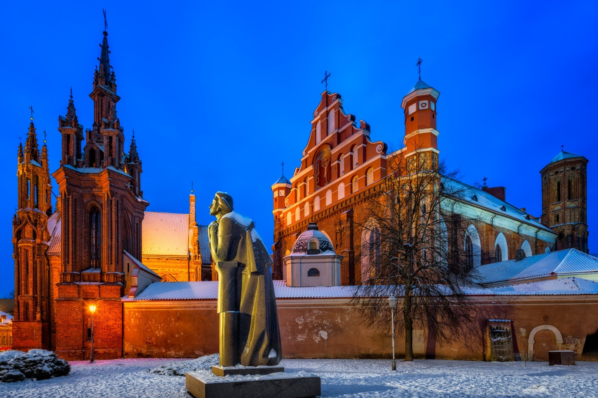

Embarque em qualquer capital do Brasil, sem custo adicional, com conexões em Guarulhos e destino a Vilnius. A partir de Guarulhos, todos os voos e o roteiro serão realizados em grupo.
Chegada, assistência no aeroporto e traslado ao hotel. Distribuição dos quartos, jantar e hospedagem.
Visita ao Centro Histórico, Catedral, igrejas de Santa Ana, São Pedro e São Paulo e Porta da Aurora. Passeio pela República de Uzupis e visita aos locais ligados a Santa Faustina e à primeira imagem de Jesus Misericordioso. Jantar e hospedagem.
Visita a Trakai e ao Castelo do século XIV, situado no Lago Galve. Continuação para Kaunas, com passeio pelo centro histórico, castelo medieval, Catedral e Avenida da Liberdade. Jantar e hospedagem.
Visita ao Palácio de Pakruojis e continuação até a Colina das Cruzes, importante local de peregrinação visitado por São João Paulo II. Chegada a Riga, jantar e hospedagem.
Visita panorâmica a Riga, conhecida como a “Paris do Báltico”, passando pela Avenida Alberta, Catedral Dome, Castelo de Riga e centro medieval. À tarde, passeio pela cidade litorânea de Jurmala. Jantar e hospedagem.
Passeio pelo Parque Nacional de Gauja, com visita às ruínas dos Cavaleiros Teutônicos, Castelo de Turaida, Gruta de Gutmann e principais atrações de Sigulda. Retorno a Riga, jantar e hospedagem.
Viagem para Tallinn com parada em Pärnu, cidade costeira conhecida por suas praias e pelo centro histórico. Chegada a Tallinn, jantar e hospedagem.
Visita ao centro medieval, muralhas, Portão de Viru, Praça da Prefeitura, Passagem de Santa Catarina, Castelo de Toompea e Catedral Alexander Nevsky. À tarde, visita ao Parque Kadriorg e jantar em restaurante típico medieval.
Travessia de ferry para Helsinque. Visita panorâmica pela Praça do Senado, Catedral, Mercado, monumento a Sibelius e Igreja Temppeliaukio. À tarde, visita à Fortaleza de Suomenlinna. Jantar e hospedagem.
Visita a Porvoo, uma das cidades mais antigas da Finlândia, com seu centro histórico de construções em madeira, Catedral e tradicionais armazéns vermelhos à beira-mar. Retorno ao hotel, jantar e hospedagem.
Passeio por Turku, a cidade mais antiga da Finlândia, com visitas à Catedral, ao Castelo e à antiga praça principal. Retorno a Helsinque, jantar e hospedagem.
Café da manhã e traslado ao aeroporto para o voo de retorno ao Brasil.
Desembarque em Guarulhos e conexão para a capital de origem. Fim dos nossos serviços.